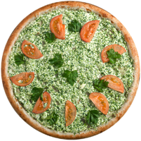
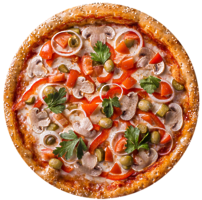
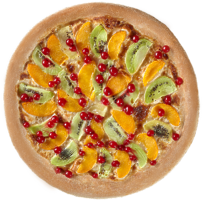
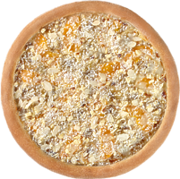
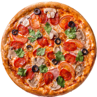
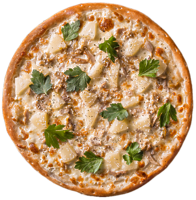

ДОСТАВКА ЭКОЛОГИЧЕСКИ ЧИСТОЙ ПИЦЦЫ
Экология, чистый воздух, природа – для нас не просто слова. Часть заработанных денег мы направляем на экологические программы. Поэтому вы должны знать: покупая у нас, вы тоже участвуете в озеленении нашего города, уборке мусора, переработке отходов и других социальных программах.
Главным подтверждением высокого класса нашего заведения становится качество обслуживания. Безупречный сервис, основанный на корпоративном стиле общения – обязательное требование к персоналу «EcoPizzaspb».
Но, основным свидетельством качества услуг нашего заведения является высокое качество продукции, что невозможно без профессионализма поваров, технологичного оборудования и свежих и экологически чистых и безопасных продуктов. Это стало приоритетом «EcoPizzaspb» и непреложным правилом. Мы работаем только с проверенными поставщиками продуктов, а для упаковки пиццы в Санкт-Петербурге используем лишь экологически чистую тару.
Оперативная доставка пиццы в Санкт-Петербурге без потери качества продукции – одно из наших достижений! И в этом, несомненно, заслуга нашего персонала - профессионалов в своем деле: поваров и операторов-логистов, курьеров. Мы обеспечим доставку пиццы и суши, пирогов, салатов и напитков, итальянской пасты в Пушкине в максимально ограниченный промежуток времени – Оооле, – и пицца, дышащая еще жаром печи у ваших дверей!
Закажите Вашу пиццу в Пушкине, Санкт-Петербурге и Всеволожске - Вы по достоинству оцените преимущества нашего сервиса и безупречное качество нашей продукции!
ЭКО-ПИЦЦА
(сливочно-сырный соус, мягкий сыр, шпинат, томат, оливковое масло, петрушка)
ПИЦЦА "ВЕГЕТАРИАНСКАЯ"
(моцарелла, перец, огурец, лук, грибы, томат, оливки, кунжут, зелень)
ПИЦЦА "САНРЭЙ"
(сгущённое молоко, персик, киви, смородина)
ПИЦЦА "РАФАЭЛЛО"
(банан, персик, молоко, миндаль, кокосовая стружка)
ПИЦЦА "ФЛОРЕНЦИЯ"
(моцарелла, бекон, салями, грибы, томаты, маслины)
ПИЦЦА "ГАВАЙСКАЯ"
(моцарелла, ананас, курица, кунжут, зелень)
г. Санкт-Петербург
пр. Большевиков, 18
2 этаж фуд-корт
Тел:+79817004050
Мы ВКонтакте
Email:ecospbpizza@mail.ru
ПН-ПТ: c 10:00 до 22:00
СБ: c 12:00 до 21:00
ВС: Выходной